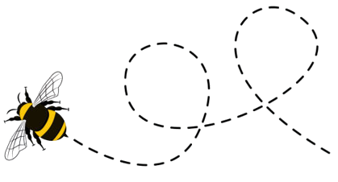
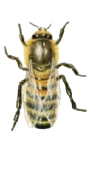
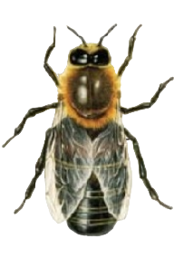
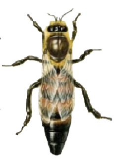

bee facts 🐝

Pszczoła miodna (Apis Mellifera)
ciekawe fakty o jej życiu
Świat oczami pszczoły
Jest on zdecydowanie inny niż nasz. Pszczoły widzą w trochę innym spektrum niż ludzie. Widzą kolor zielony, niebieski, (niewidoczny dla nas) ultrafiolet i różne ich kombinacje. Nie widzą jednak koloru czerwonego. Pszczoły widzą również spolaryzowane światło. W skrócie pozwala ono orientować się w terenie, nawet, kiedy słońce jest schowane za chmurami, ponieważ słońce jest dla nich w pewnym sensie kompasem.
Pszczoły odczuwają pole magnetyczne

Zostało udowodnione, że pszczoły traktują pole magnetyczne Ziemi jako kompas, podobnie jak słońce. Wiele eksperymentów wskazuje na to, że odczuwają one również mniejsze pola magnetyczne, którymi jesteśmy otoczeni.
Rodzina pszczela
Robotnica
Najliczniejszą grupą w każdej rodzinie pszczelej są robotnice. Zajmują się przede wszystkim pracą na rzecz wspólnoty, jednak wbrew pozorom ich wyłącznym zadaniem nie jest produkcja miodu. W każdej rodzinie robotnice są wyspecjalizowane i zajmują się poszczególnymi zadaniami. (Więcej na następnej stronie). Robotnice żyją latem ok. 38 dni, a zimą 6 miesięcy.
Truteń
Truteń to męska wersja pszczoły miodnej. W przeciwieństwie do pszczół robotnic, trutnie nie mają żądeł i nie zbierają nektaru ani pyłku. Podstawową rolą trutni jest zapłodnienie królowej pszczół, nie podejmują one żadnych prac w ulu. Kiedy pszczoły przygotowują się do zimy robotnice wyrzucają wszystkie trutnie z ula skazując je na śmierć.
Matka
W poprawnie działającej rodzinie pszczelej znajduje się zazwyczaj tylko jedna matka. Zadaniem matki jest składanie jaj, z których rozwijają się wszystkie osobniki rodziny. Matka pszczela w okresie całego swojego życia nie wykazuje żadnej troski o potomstwo, co ze względu na jej ogromną płodność nie byłoby możliwe, zadania te podejmują pszczoły robotnice.
Role robotnicy
1-2 dzień życia
Pszczoła zaraz po wylęgnięciu czyści komórki i utzymuje odpowiednią temperaturę w ulu.
3-5 dzień życia
Karmi najstarsze larwy i niedojrzałe pszczoły jako pszczoła karmicielka.
6-11 dzień życia
Kontynuuje swoją pracę jako pszczoła karmicielka. Karmi najmłodsze larwy.
12-17 dzień życia
Produkuje wosk i buduje z niego plastry. Zajmuje się również czyszczeniem ula.
18-21 dzień życia
Spędza swój dzień broniąc ula. Ryzykuje swoje życie jeśli musi użadlić intruza.
22+ dzień życia
Zostaje pszczołą zbieraczką. Zbiera pyłek i nektar.